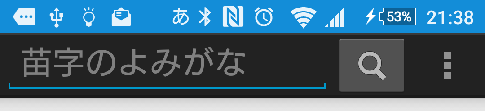
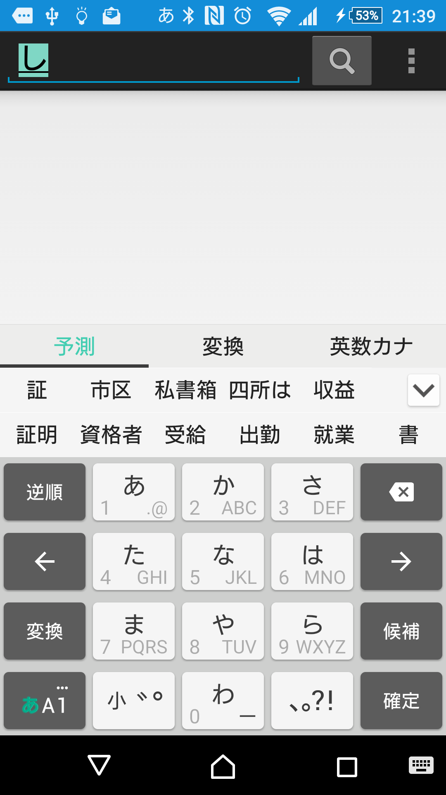
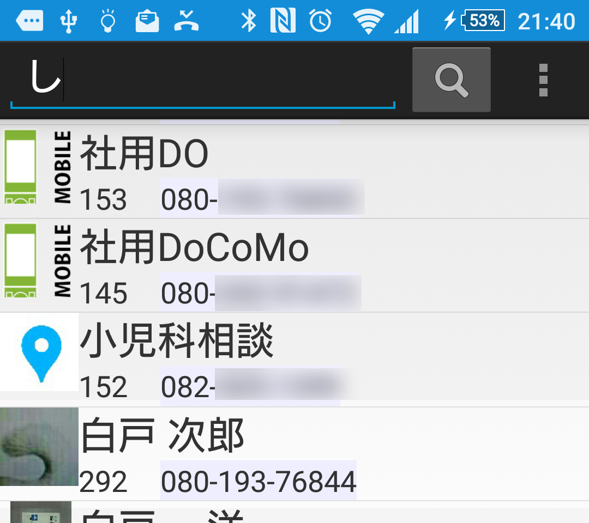

|
カンタン通話に工夫した
Phone2nd |
電話帳の検索
名前（苗字のよみがな）で電話帳を検索します。

使い方 |
|
検索したい文字（苗字のよみがな）を入力して「検索」ボタンをタップして下さい。
|
|

多くの電話帳の検索機能は一文字入力する毎に候補を絞り込む「インクリメント検索」になっていますが 文字入力プログラム（インプットメソッドなど）やキーの有無など、一律に対応できないケースがありますので
ここは私の技量不足です。読みがな以外に 読めない漢字をそのまま検索とか 電話番号検索など更に機能拡張のアイディアもありますので最終版までの課題とさせてください。 |
